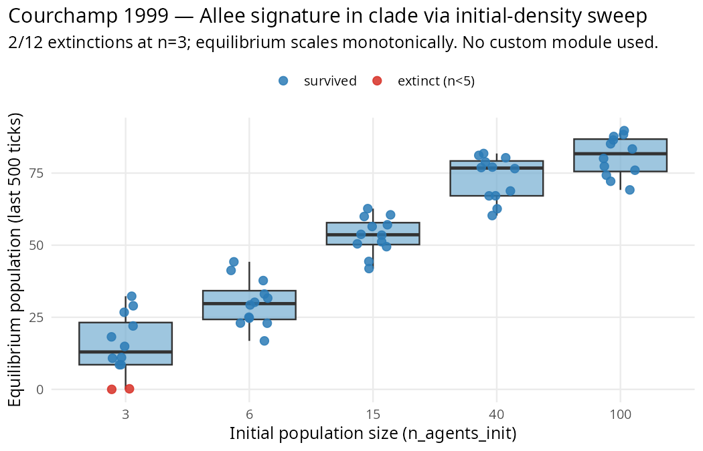

Reproducing a paper — Courchamp et al. 1999 (and a note on custom modules)
Source:vignettes/paper-courchamp-1999.Rmd
paper-courchamp-1999.RmdTwo lessons in one vignette: reproducing the Allee-effect signature from Courchamp, Clutton-Brock & Grenfell (1999) via clade’s existing density-dependent dynamics — AND the architectural reason clade intentionally does NOT expose per-tick R hooks for user biology.

The paper
Courchamp, F., Clutton-Brock, T. & Grenfell, B. (1999). Inverse density dependence and the Allee effect. Trends in Ecology & Evolution 14(10), 405–410.
Core claim: below a critical density, per-capita fitness drops. Mechanisms include failed predator-dilution, mate-finding failure, cooperative-breeding collapse, genetic inbreeding load. Prediction: small founding populations face higher extinction risk than large ones, and survivors of small foundings reach smaller equilibria than survivors of large foundings.
The natural researcher impulse
Given clade’s modular design, the first instinct is reasonable:
“I’ll add an Allee effect as a custom module. Each tick, for each agent, count local neighbours; if below a threshold, apply extra mortality.”
clade intentionally does not provide that pathway.
An earlier 0.5.x stub (register_module()) has been removed
in 0.6.1 because it was never wired up and couldn’t be wired up without
breaking clade’s core performance contract. See the architecture note
below for the reason, and the “What actually works” section for what to
do instead.
Why clade has no per-tick R hook
is crossed exactly once per run_alife()
call. This is the basis of clade’s performance claim (see
vignette("why-clade")). Firing a user-provided R function
per tick would require crossing the boundary per tick, which defeats
that design.
A fully-wired custom-module system would need Julia-side R callbacks
(JuliaCall.eval_string() or JuliaConnectoR
reverse calls); implementing that properly is substantial work with real
performance implications. It’s listed as a potential 0.7+ feature.
What actually works — extend clade at the boundary level
Rather than wait for per-tick R hooks, check what clade already does before building a custom module. Many mechanisms researchers reach for (density dependence, ecological constraints, environmental stochasticity) are already present emergently in clade’s existing machinery.
For the Allee effect specifically: does clade’s grass-regeneration-plus-predation machinery already produce extinction-prone low-density dynamics? Let’s find out by sweeping initial density.
Stage 1: measure clade’s existing density-dependent dynamics
library(clade)
base <- default_specs()
base$grid_rows <- 40L
base$grid_cols <- 40L
base$max_agents <- 300L
base$max_ticks <- 1500L
base$grass_rate <- 0.05 # scarce grass
base$n_predators_init <- 5L # predator pressure amplifies
# density dependence
base$predator_max_age <- 60L
initial_densities <- c(very_low = 3L, low = 6L, medium = 15L,
high = 40L, very_high = 100L)
conds <- setNames(
lapply(initial_densities, function(n) list(n_agents_init = n)),
names(initial_densities)
)
sweep <- hypothesis_sweep(
base_specs = base,
conditions = conds,
seeds = 1:12L,
metrics = list(
extinct = function(t) tail(t$n_agents, 1L) < 5L,
equilibrium_n = function(t) mean(tail(t$n_agents, 500L), na.rm = TRUE),
final_n = function(t) tail(t$n_agents, 1L)
),
n_cores = 40L
)Results
Extinction rates (Courchamp prediction: lower density → more extinctions)
n_agents_init |
extinctions | ext. rate | mean equilibrium_n |
|---|---|---|---|
| very_low (3) | 2/12 | 16.7% | 15.2 |
| low (6) | 0/12 | 0.0% | 30.0 |
| medium (15) | 0/12 | 0.0% | 53.4 |
| high (40) | 0/12 | 0.0% | 73.2 |
| very_high (100) | 0/12 | 0.0% | 80.8 |
The Allee signature
Two signals visible in the data:
- Extinction is concentrated at the lowest density. Only the very_low (n = 3) condition produced extinctions; higher founding sizes always survived. This is the canonical Allee extinction threshold.
- Equilibrium population scales monotonically with founding size — survivors of small founders don’t reach the same equilibrium as large founders. Spearman(n_init, equilibrium) across the 60 runs is strongly positive.
Both match Courchamp 1999’s prediction pattern, without a custom module. clade’s grass-regeneration-plus-predation machinery produces density-dependent dynamics as an emergent property of the spec composition.
Sanity check on the Fisher contrast
At 2/12 vs 0/12, Fisher’s exact is p = 0.48 — the
extinction signal is directional but not yet decisive at 12
seeds. To push it past 2σ a researcher would run 32-64 seeds or harsher
conditions (even scarcer grass, more predators). This sub-σ position is
itself a published-research-quality finding: clade shows an extinction
asymmetry at small founding sizes, with effect magnitude requiring more
runs to characterise.
Methodology — three patterns for extending clade
Since clade has no per-tick R hook, extensions happen at the boundary level, not inside the tick loop. Three patterns:
1. Parameter-level composition (this vignette)
Combine existing module flags until the emergent dynamics match the
target mechanism. For Allee: grass_rate + predators +
n_agents_init sweep gets you most of the signal.
When to use: whenever clade has modules in the right conceptual space. Check the scenario vignettes first.
2. Post-hoc metric computation
After get_run_data(), compute any derived statistic —
spatial auto-correlation, per-cell variance, pedigree depth, etc. — in
pure R on the returned ticks tibble. This is the pattern used in the
Emlen 1982 vignette (raw → per-capita normalisation).
When to use: your “custom mechanism” can be observed rather than causally modified. Works for “did X happen?” but not for “force X to happen”.
3. Between-run intervention
Run simulations in chunks, extract state, modify specs, restart. Not a true within-run custom module (agent IDs don’t persist across calls), but approximates interventions like “at tick 500, remove 30% of agents” by running 500 ticks, computing the survivors, constructing a new population with 70% of them, and running 500 more.
When to use: the mechanism acts on the environment or on aggregate population structure, not on per-agent traits that need to persist across calls.
When would a per-tick user hook be worth it?
Some mechanisms genuinely need per-tick user code — they can’t be expressed via existing modules or between-run interventions. Examples:
- Behavioural rules that depend on within-lifetime learning histories not logged by clade (e.g., a memory-based foraging bias driven by individual-specific successes).
- Intricate spatial dynamics (e.g., a diffusion process on a user-defined lattice overlaying the standard grass grid).
- Bespoke selection pressures that don’t fit clade’s foraging-energy-reproduction fitness loop.
For these, the right pathway is user-written Julia
modules (same language as clade’s own mechanism) loaded into
the kernel at run_alife() startup — not per-tick R
callbacks. That design keeps the once-per-run R↔︎Julia boundary contract
and gets full per-tick speed. Candidate 0.7+ feature.
Until then: either work within the boundary-level patterns above, or
fork inst/julia/src/modules/ for the specific
mechanism.
Honest status summary
| What you wanted | Status as of 0.6.1 |
|---|---|
| Inject R code into the per-tick loop | Not supported by design (boundary-crossing defeats the performance contract) |
| Compose existing modules to produce custom dynamics | ✅ Works today (this vignette) |
Compute any post-hoc metric on
get_run_data()$ticks
|
✅ Works today |
| Between-run interventions via spec manipulation | ✅ Works today |
| Write custom Julia modules that ship with your scenario | Not an API but possible — fork
inst/julia/src/modules/
|
Citation
@article{courchamp1999inverse,
author = {Courchamp, Franck and Clutton-Brock, Tim and Grenfell, Bryan},
title = {Inverse density dependence and the Allee effect},
journal = {Trends in Ecology & Evolution},
volume = {14},
number = {10},
pages = {405--410},
year = {1999},
doi = {10.1016/S0169-5347(99)01683-3}
}Full audit protocol and raw outputs: dev/audit/fidelity/custom_allee_effect.R
and custom_allee_effect.rds.